input_parameters package¶
Submodules¶
input_parameters.general_parameters module¶
Module gathering all the general input parameters used for the simulation
| Authors: | Alexandre Lasheen, Danilo Quartullo |
|---|
- class input_parameters.general_parameters.GeneralParameters(n_turns, ring_length, alpha, momentum, particle_type, user_mass=None, user_charge=None, particle_type_2=None, user_mass_2=None, user_charge_2=None, number_of_sections=1)¶
Bases: object
Object containing all the general input parameters used for the simulation
- alpha = None¶
Momentum compation factor (up to 2nd order) for each RF section 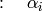
- beta_r = None¶
Relativistic beta (program)

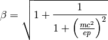
- energy = None¶
Energy (program) in [eV] 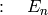

- eta0 = None¶
Slippage factor (order 0) 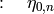

- eta1 = None¶
Slippage factor (order 1) 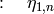

- eta2 = None¶
Slippage factor (order 2) 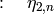

- eta_generation()¶
- Pre-processing of the slippage factor parameters with respect to the input momentum compaction factor (up to 2nd order) and the momentum program.For eta coefficients, see Lee: Accelerator Physics (Wiley).
- gamma_r = None¶
Relativistic gamma (program) 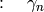
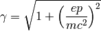
- momentum = None¶
- Momentum (program) in [eV/c] for each RF section
 Can be given as a single value to be assumed constant, or as a program of (n_turns + 1) terms in case of acceleration.
Can be given as a single value to be assumed constant, or as a program of (n_turns + 1) terms in case of acceleration.
- n_sections = None¶
- Number of sections defines how many longitudinal maps are done per turn.Default is one.
- n_turns = None¶
Number of turns of the simulation
- particle_type = None¶
- Particle typeRecognized types: ‘proton’ and ‘user_input’ to input mass and charge manually.Particle mass in [kg] 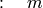 *Particle charge in [C] 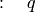 *Second particle type: optional; does not affect the momentum, energy, beta, and gamma.
- ring_circumference = None¶
- Ring circumference is the sum of lengths

- ring_length = None¶
- Ring length array contains the length of the RF sections, in [m]
- ring_radius = None¶
Ring radius in [m] 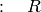
input_parameters.rf_parameters module¶
Module gathering and processing all the RF parameters to be given to the other modules.
| Authors: | Alexandre Lasheen, Danilo Quartullo |
|---|
- class input_parameters.rf_parameters.RFSectionParameters(general_parameters, section_number, n_rf, harmonic, voltage, phi_offset)¶
Bases: object
Object gathering all the RF parameters for one section (see section definition in longitudinal_tracker.Ring_and_RF_section), and pre-processing them in order to be used in the longitudinal_tracker.py module. It can be added to another RF_section_parameters object by the Sum_RF_section_parameters object in order to concatenate all the parameters for one full ring.
- alpha_order = None¶
- Slippage factors for the given RF section
- beta_r = None¶
Copy of the relativistic parameters
- counter = None¶
- Counter to keep track of time step (used in momentum and voltage)It is defined as a list in order to be passed by reference to other modules.
- eta_tracking(delta)¶
The slippage factor is calculated as a function of the relative momentum (delta) of the beam. By definition, the slippage factor is:
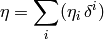
- momentum = None¶
- Momentum program in [eV/c] 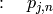
- n_rf = None¶
- Number of RF systems in the section
 Counter for RF is:
Counter for RF is:
- n_turns = None¶
- Number of turns for the simulationCounter for turns is:

- p_increment = None¶
Momentum increment (acceleration/deceleration) between two turns, for one section in [eV/c]

- phi_s = None¶
Synchronous phase for this section, calculated from the gamma transition and the momentum program.
- section_length = None¶
Length of the section in [m] 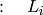
- sno = None¶
Number of the RF section (from 1 to n) – has to be unique
- input_parameters.rf_parameters.calc_phi_s(RF_section_parameters, accelerating_systems='all')¶
The synchronous phase calculated from the rate of momentum change. Below transition, for decelerating bucket: phi_s is in (-Pi/2,0) Below transition, for accelerating bucket: phi_s is in (0,Pi/2) Above transition, for accelerating bucket: phi_s is in (Pi/2,Pi) Above transition, for decelerating bucket: phi_s is in (Pi,3Pi/2) The synchronous phase is calculated at a certain moment. Uses beta, energy averaged over the turn.
- input_parameters.rf_parameters.input_check(input_value, expected_length)¶
- Function to check the length of the inputThe input can be a float, int, np.ndarray and listIf len(input_value) == 1, transform it to a constant arrayIf len(input_value) != expected_length and != 1, raise an error